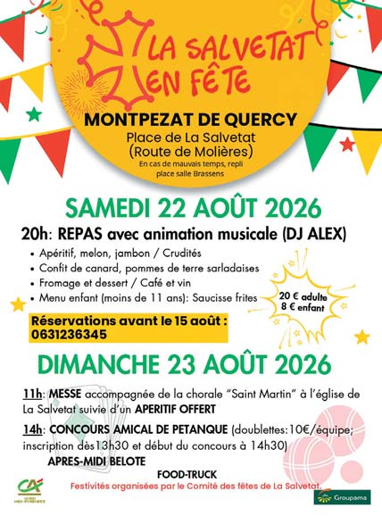
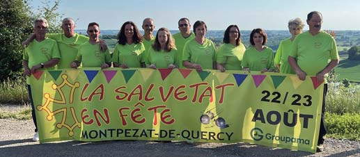

23 À l’approche de l’été, l’Of�ce de Tourisme du Quercy Caussadais vous invite à découvrir les ri- chesses de son territoire à travers visites, randon- nées et animations. ANIMATIONS ESTIVALES Tous les mardis à 10h30 : visite guidée du centre historique et de la Collégiale Saint-Martin. Chaque dimanche : visite de l’église de Saux à 16h et de la Collégiale à 17h. Les 16 juillet et 6 août : découverte des petites églises autour de Montpezat-de-Quercy avec Loisirs et Patrimoine Montpezatais. Pour une découverte ludique du village, pro�tez du parcours Randoland (gratuit à l’Of�ce de Tou- risme) et du parcours Baludik disponible sur l’ap- plication gratuite. Randonnées Trois circuits balisés vous permet- tent d’explorer les paysages du Quercy : PR1 Le Petit Vallon : 4 km (facile) PR2 Les Coteaux du Quercy : 11 km (moyen) PR3 Chemin de Saux : 10,6 km (moyen) Les �ches randonnées sont disponibles à l’Of�ce de Tourisme et sur l’application 82 Sport Nature. À ne pas manquer Découvrez l’exposition pho- tographique de Vincent Beaume au Quercy Gé- néreux. Des rencontres avec des producteurs locaux, dégustations et découvertes des savoir- faire du territoire y seront également proposées. Informations pratiques En juillet et août, l’Of�ce de Tourisme est ouvert tous les jours de 9h30 à 12h30 et de 14h à 18h. À noter La Semaine du Goût se tiendra du 12 au 18 octobre. Programme à venir. Habitants, devenez ambassadeurs ! Venez dé- couvrir le Quercy Généreux, espace scénogra- phique dédié à la polyculture et à la viticulture, avec livres, jeux et espace climatisé. Renseignements : 05 63 26 04 04 tourisme@quercycaussadais.fr Of�ce de tourisme Au hameau de La Salvetat, l’été joue les prolongations ! Il y a des rendez-vous qui sentent bon les vacances, les retrouvailles et les soirées qui s’étirent… La fête du hameau de La Salvetat est de ceux- là, elle se tiendra le samedi 22 et dimanche 23 août 2026. Samedi soir, dès 20h, les tables se remplissent autour d’un repas champêtre. La nuit s’installe et la musique prend le relais avec DJ Alex. Dimanche matin, à 11h, l’église accueille la messe, accompagnée par la chorale « Saint-Martin », suivie du traditionnel pain bénit. À la sor- tie, le verre de l’amitié sera offert par le comité des fêtes. Dès 13h30, changement de décor : les boules claquent, les équipes se forment et le terrain de pétanque devient le théâtre d’une compétition conviviale. Les amateurs de cartes ne seront pas en reste avec la possibilité de participer à une partie de belote. Pour prolonger la journée, un food truck sera également présent pour se restaurer sur place. D e u x j o u r s p o u r se retrou- ver, partager et pro�ter ensemble de l’été : voilà la promesse de cette fête du hameau de La Salvetat les 22 et 23 août. Le comité des fêtes vous attend nombreux ! Une seule consigne : ne pas man- quer le rendez-vous ! Comité des Fêtes de la Salvetat